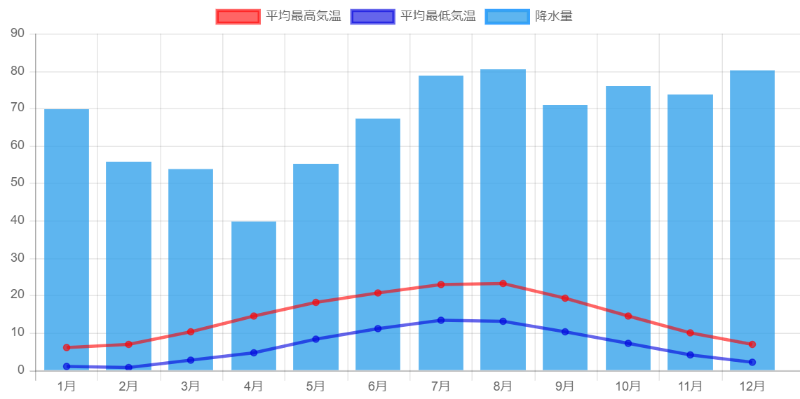
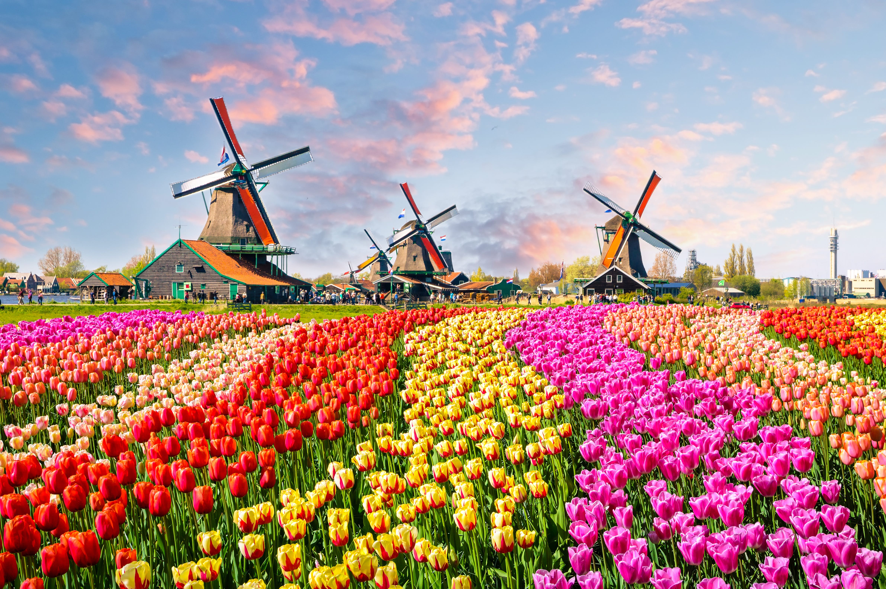
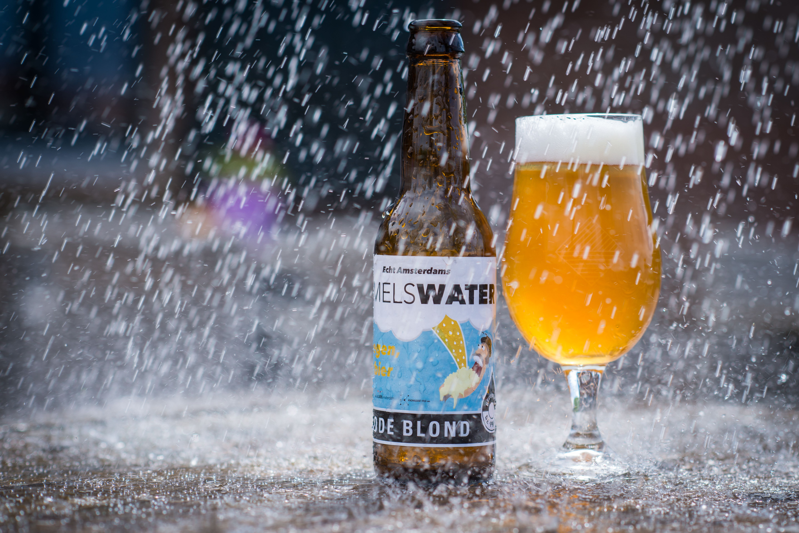
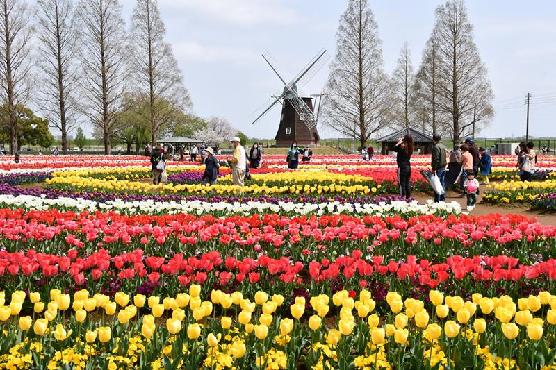
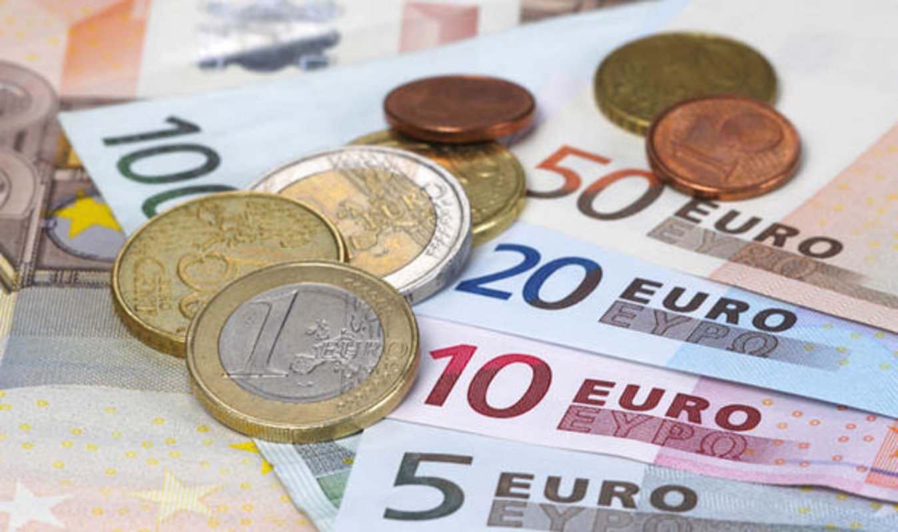
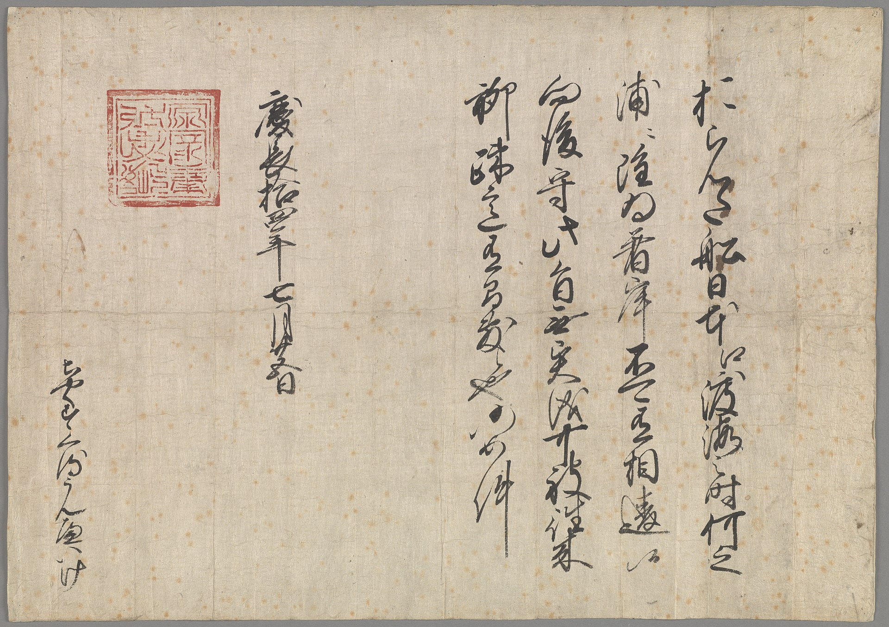
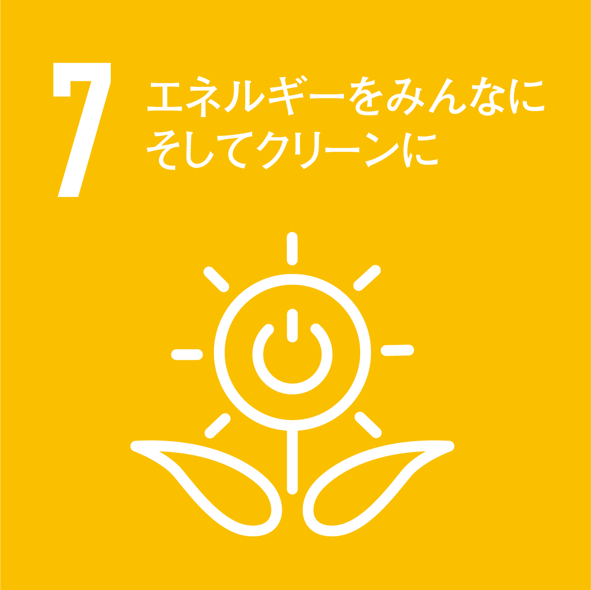
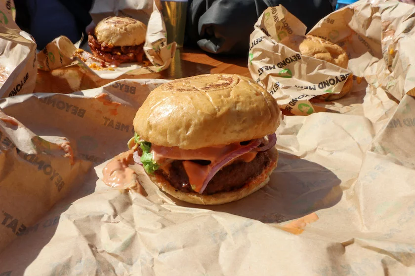

国名 オランダ
（正式名所）オランダの正式名称は、ネーデルラント王国 Kingdom of the Netherlands。 ネーデルラントは「低地の国」という意味です。 「オランダ」は日本のみの呼び方でポルトガルから伝来したと言われています。Hollandという呼び方もありましたが、 2020年よりオランダは「Holland」という呼称を不使用にし、「Netherlands」の名称に統一しました。
首都 アムステルダム
面積 約41,500平方キロメートル
人口 1,800万人
分布 東はドイツ、南はベルギーと国境を接し、北と西は北海に面するヨーロッパの国です。
四季がはっきりしていて、海洋性気候に属する。
ポルダー
ポルダーと呼ばれる干拓地が多い。 海面より低い地域を風車などで排水し、干拓して農地や住宅地に転用する技術が発展してきた。
運河
オランダには数多くの運河がある。交通や輸送で重要な役割を果たしていて、 特に首都アムステルダムは美しい運河が特徴。
風車とチューリップ畑

オランダのサステナブルなアイデア２選！！
雨水を活用したビール醸造所「Hemelswater」
アムステルダムのビール醸造所「Hemelswater」は、1000リットル以上の雨水を集めて作ったビールを販売している。 オランダが古くから抱えてきた水害問題を楽しく解決するアイデアだ。やや柔らかくて濃い風味のある雨水ビールは ただ美味しいだけでなく、人々に気候変動や治水へのアクションを喚起している。
チューリップフェスティバル
チューリップを楽しむイベント。春に各地で開催される。畑や公園が一般公開され、 街路に植えられたり花壇が作られたり広場に飾られたりして、 人々がさまざまな色や品種のチューリップを鑑賞できる。 キューケンホフ公園が特に有名で世界中から観光客が訪れる。
EU加盟国
オランダは1958年1月1日にEUに加盟しました。
加盟国内では
➀EU参加国のお金を、同じ種類の「ユーロ」というお金にする
➁EU参加国どうしを自由に行き来できるようにする
➂EU参加国どうしでの輸入や輸出の制限をやめる
という３つの決まりごとがあります。

日蘭関係
１７世紀に通商許可書を通して唯一ヨーロッパの国と貿易を続けていました。 そして江戸時代にはオランダ語を通じて蘭学が日本に入ってきました。
しかし戦争中最悪な関係になりましたが、戦後の現在は良い関係に戻りました。

クリスマスが2回来る⁉
オランダでは、セント・ニコラス（シンタクラース）の命日12月6日と、イエス・キリストの誕生日12月25日にお祝いをします。 ただしセント・ニコラスのお祭りは1か月くらい続くから驚きです！ 子供たちはセント・ニコラスの日にたくさんプレゼントをもらっているので、クリスマスには1つだけプレゼントをもらいます。 オランダの12月25日はとても地味なのです。

誕生日の祝い方が違う
オランダのお誕生日は、 誕生日は誕生日を迎える人がプレゼントを配る、おもてなしをするという習慣があります。
またオランダにはオランダ独自のバースデーソングがあります。それがこちらです。
SDGs7 「エネルギーをみんなにそしてクリーンに」

DGTL（デジタル）」
アムステルダム市で毎年開催される世界初のゴミの出ない音楽フェス
グリーンエネルギーグリットの整備を行ったことにより 発電機や燃料、その他の資材の搬入にかかわる環境負荷も最小限にすることができました。 また、イベント内で食べる食品は、全てコンポストされておりDGTL開催中に 人気だったのはこのハンバーガーでした。
このハンバーガーは実は植物由来のものでできたヴィーガンバーガーです。 水は99%カット、栽培に必要な土地は93%カット、 温室効果ガスは90%カット、エネルギーは46%カットになっているそうです。 それだけではなく包装紙もコンポスト可能なものを使用しています。